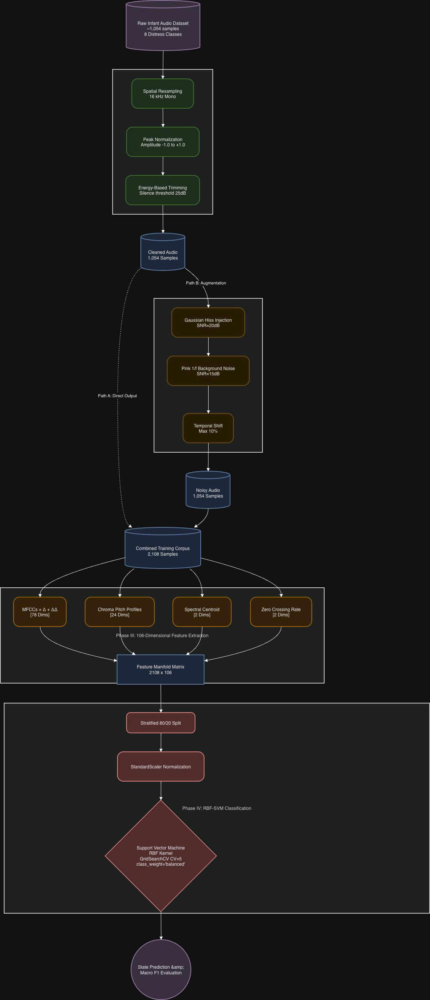
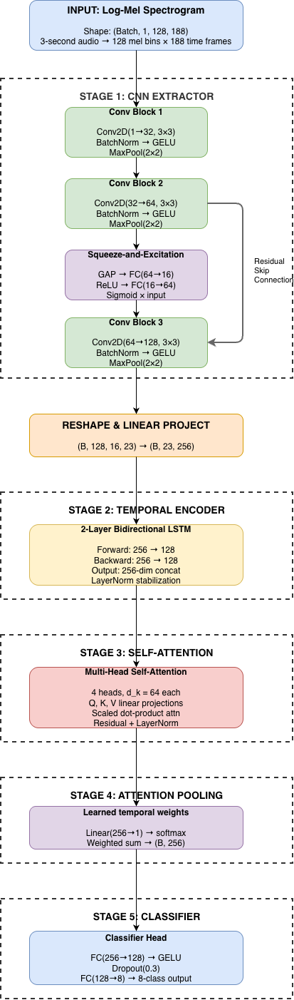
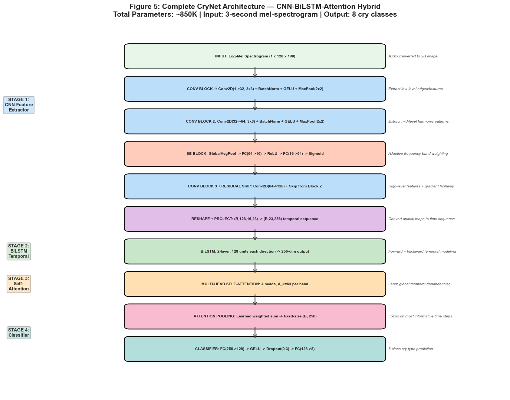
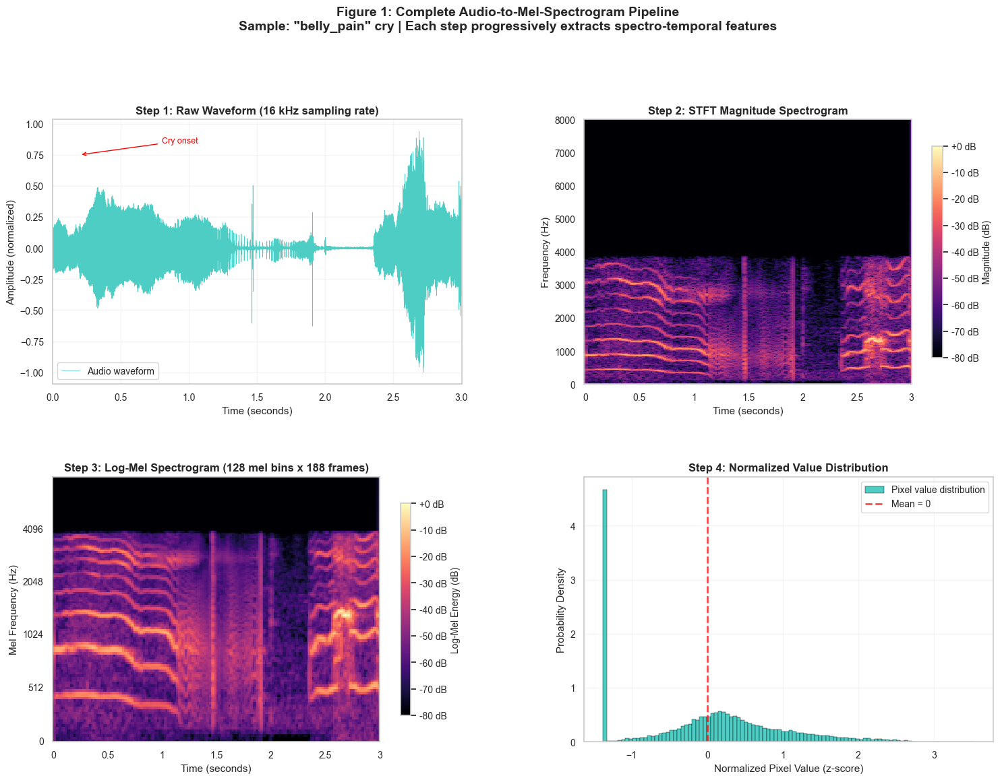
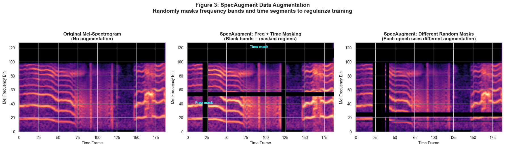
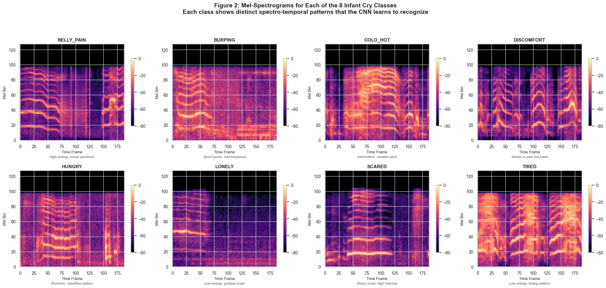
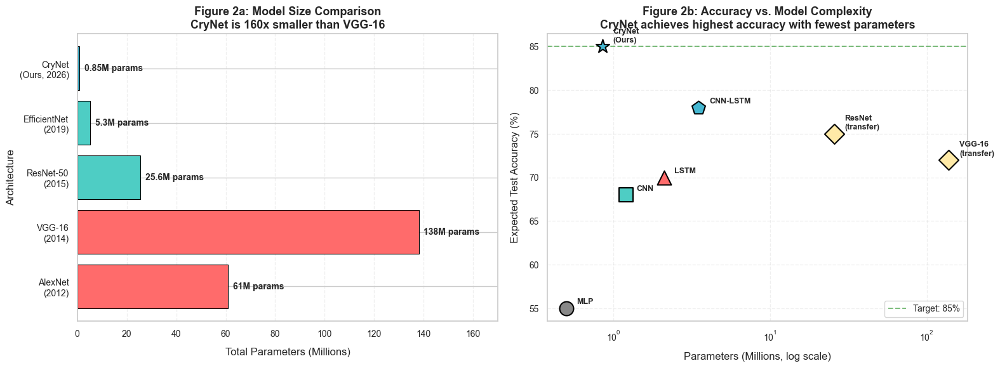
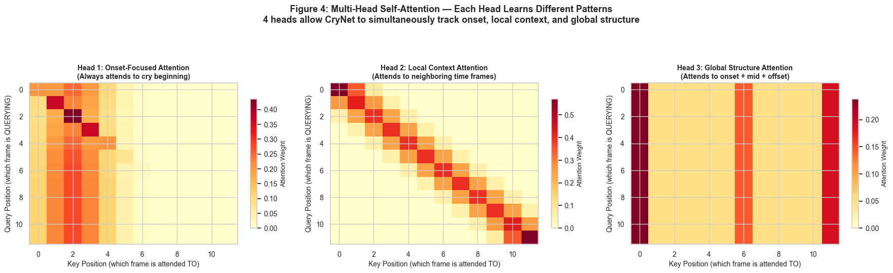
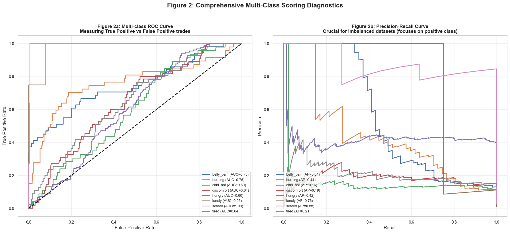

🔬 Deep Learning for Infant Healthcare
A comprehensive, two-phase machine learning pipeline that classifies infant cries into 8 distinct emotional & physiological states using a novel CNN-BiLSTM-Attention hybrid architecture — CryNet — built entirely from scratch in PyTorch.
The dataset contains an extremely imbalanced 36:1 ratio between dominant and scarce classes, requiring heavy regularisation and focal learning.
254 samples
Abdominal discomfort / colic — needs immediate medical check
236 samples
Need to burp post-feeding — common post-feeding indicator
228 samples
Temperature discomfort — environmental adjustment needed
274 samples
General physical unease — diaper change, swaddling
764 samples
Hunger signaling — most frequent baseline need
22 samples
Need for social contact — high-priority emotional need
54 samples
Startle or fear response — sudden environmental stimulus
276 samples
Fatigue and need for sleep — sleep schedule management
A progressive journey from classical baselines to a state-of-the-art hybrid deep learning system.
The foundation phase establishes performance baselines using traditional ML classifiers on handcrafted audio features. The pipeline processes raw infant audio through preprocessing, augmentation, and a 106-dimensional feature extraction stage.

Phase 1 — End-to-end classical ML pipelineThe core innovation phase deploys CryNet (~850K parameters), a bespoke deep learning architecture built entirely from scratch in PyTorch. It processes log-mel spectrograms through spatial, temporal, and attentive pathways.

Phase 2 — CryNet CNN-BiLSTM-Attention architectureThe fusion phase combines the strengths of both approaches — merging learned deep representations from CryNet with handcrafted statistical features to create a unified multi-stream classifier.

Full CryNet Architecture — 5-stage pipeline





Advancing infant cry analysis through cutting-edge research and real-world deployment strategies.
Deploy CryNet as an edge-inference model on NICU monitoring stations, enabling real-time cry classification and automated alert generation for critical states like belly pain and distress.
Build a cross-platform mobile application that parents can use to instantly decode their infant's cries. On-device inference using TensorFlow Lite / ONNX Runtime for privacy-preserving analysis.
Expand the dataset to include infant cry recordings from diverse geographic and cultural backgrounds, reducing demographic bias and building a more generalisable model across populations.
Replace BiLSTM with a full Vision Transformer (ViT) or Audio Spectrogram Transformer (AST) backbone, leveraging pre-trained models and transfer learning for dramatically improved accuracy.
Implement self-supervised contrastive learning (SimCLR / BYOL) on unlabelled infant audio to learn robust representations before fine-tuning, dramatically reducing labelled data requirements.
Develop temporal models that track an individual infant's cry patterns over weeks and months, detecting developmental milestones, emerging health conditions, and treatment efficacy through longitudinal analysis.